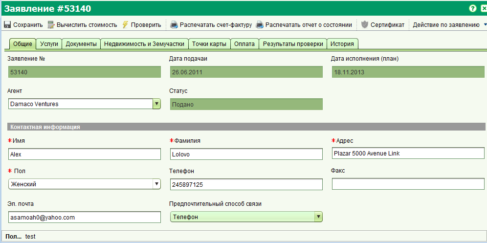

Форма заявления
Форма заявления позволяет создавать и редактировать заявления. Для создания нового заявления, можно воспользоваться
главным меню "Заявления" => "Новое заявление" или нажав кнопку "Новое Заявление" на панели инструментов главного окна
 .
.
Для редактирования заявления, выберите его в списке назначенных или не назначенных заявлений, расположенных на панели задач,
и щелкните на кнопке "Открыть".
Если заявление не отображается в данных списках, воспользуйтесь формой поиска заявлений и щелкните кнопку "Открыть" в результатах поиска.
В итоге будет открыта форма заявления, на которой вы можете внести изменения и сохранить их.

Заявление представляет собой набор услуг, которые будут выполнены агентством по регистрации земли,
обычно в результате запроса со стороны потребителей этих услуг. Каждая услуга может привести к изменению
информации о недвижимости и/или ее прав. В заявлении может присутствовать следующая информация:
-
Агент – Физическое или юридическое лицо, подающее заявление. Данные агента являются необязательными.
-
Контактное лицо – Физическое лицо, которое будет оповещено в случае необходимости предоставления
дополнительной информации по заявлению или любых других разъяснений.
Контактное лицо должно присутствовать в каждом заявлении и обычно является самим заявителем.
-
Услуги – Описывают действия, которые будут выполнены агентством по заявлению.
Предполагается, что каждое агентство по регистрации земли, осуществит настройку услуг в соответствии со своей местной спецификой и практикой.
По крайней мере одна услуга должна быть добавлена в заявление.
- Недвижимость – Один или несколько объектов недвижимости, которые будут задействованы во время исполнения услуг по заявлению.
Объекты недвижимости не являются обязательными для новых заявлений, но могут потребоваться перед запуском какой-либо услуги.
- Документы – Юридические или другие документы, которые объясняют или являются основой для изменения кадастра и регистрационных данных.
Отсканированные копии документов могут быть прикреплены для более легкого получения содержимого документов.
Документы не являются обязательными для заявления, но могут потребоваться для определенных услуг.
Список требуемых документов для услуг представлен на вкладке "Документы", в списке "Необходимые документы".
Этот список зависит от услуг, которые были добавлены в заявление.
-
Оплата – Определяет необходимые платежи, которые должны быть сделаны перед тем как заявление может быть обработано дальше.
Сумма оплата основа на услугах и объектах недвижимости, добавленных в заявление. Ее расчет может быть в дальнейшем изменен, для удовлетворения
конкретных нужд агентства.
Оплата автоматически рассчитывается при подачи заявления. Чтобы произвести расчет оплаты, переде регистрацией заявления в системе, нажмите
на кнопку "Вычислить стоимость" на панели инструментов формы заявления. Вы также можете напечатать счет к оплате,
нажав на кнопку "Распечатать счет-фактуру". Имейте в виду, что SOLA на данный момент не имеет функции приема платежей.
По этой причине, должен быть явно установлен флажок "Оплачено", после получения квитанции об оплате. Это позволит назначить заявление на исполнение.
-
Точки карты – Используетя для установления приблизительного месторасположения заявления.
Ввод данной информации может помочь определить другие заявления поблизости, которые могут иметь влияние на текущее заявление или наоборот.
Точки карты не являются обязательными.
-
Проверка – Отображает результаты проверки бизнес-правил, когда пользователь вручную вызывает это действие,
путем нажатия на кнопку "Проверить".
Проверка может быть осуществлена только после того, как заявление подано.
-
История – Отображает историю действий которые были предприняты с заявлением и его услугами.
История отображается только после того как заявление было подано.
Смотрите таже: